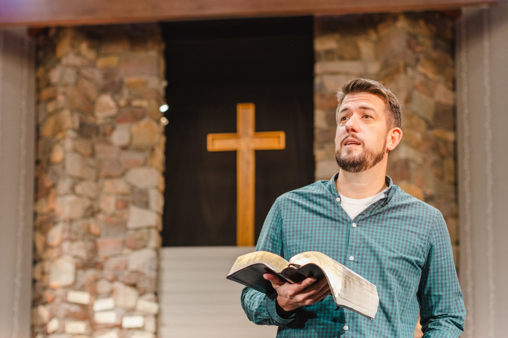
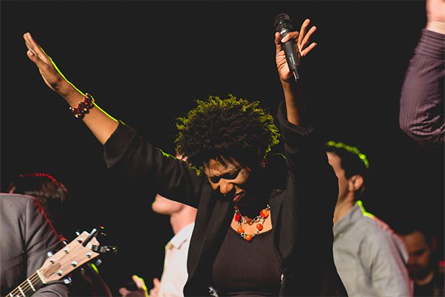

Welcome to Grace Community Church
A place of worship, community, and growth.
Our Mission
To spread faith, love, and the teachings of Jesus Christ to all who seek Him.
Service Times
Sunday Worship: 9:00 AM & 11:00 AM
Wednesday Bible Study: 7:00 PM
Meet Our Pastors

Pastor John Doe - Lead Pastor

Pastor Jane Smith - Worship Leader
What Our Members Say
"This church has changed my life! The community is amazing."
- Sarah Johnson
Prayer Requests
Prayer request sent to Jesus
Contact Us
Location: 123 Church Street, El Paso, TX
Email: info@gracechurch.com
Phone: (555) 123-4567